Phase 1.5 · Final visual correction
The architecture of shade.
Three Indonesian-inspired building studies, refined at pedestrian height. Inspect the entrances, material separation and sidewalk connections under shared daytime lighting.
Loading verified source meshes and architectural layers…
Depth before decoration.
Model counts appear when the actual scene is ready.
The office uses layered concrete fins, planted ledges and a stone lobby. The mixed-use building pairs terracotta plaster with an arcade and open roster blocks. The neighborhood shopfront uses a narrow two-story body, timber screens and a deep clay roof.
Original and enhanced pairs share their camera, lighting and source scale. All signage is fictional architectural artwork. The five pedestrian inspections share a 1.65 m eye height and a 40° lens.
The previous visual review was not approved. This correction awaits your review. Target: average 4/5; no score or visual approval assigned. Phase 2 remains paused.
Running scene evidence
Waiting for imported geometry.
Pedestrian inspection
Five direct browser captures: 1280 × 720, 40° field of view, 1.65 m above the sidewalk datum, with the same neutral daytime preset. Select an image to inspect its live view.
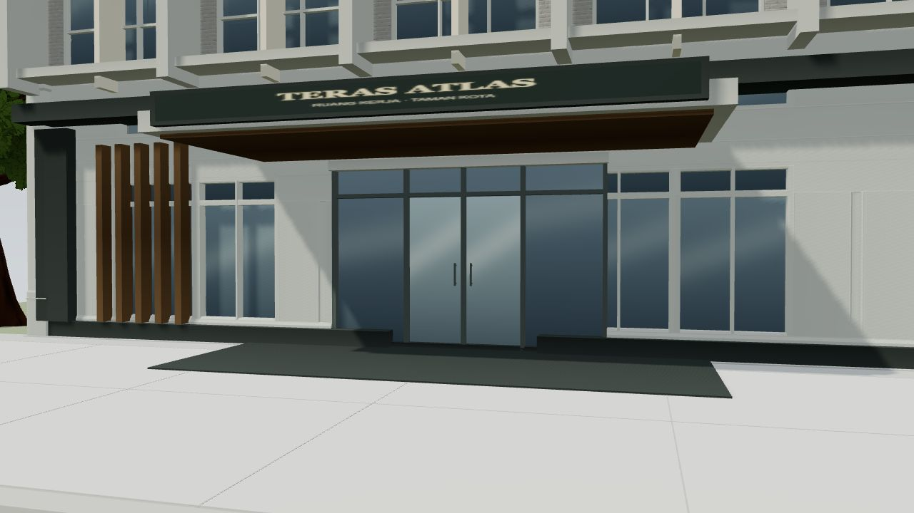
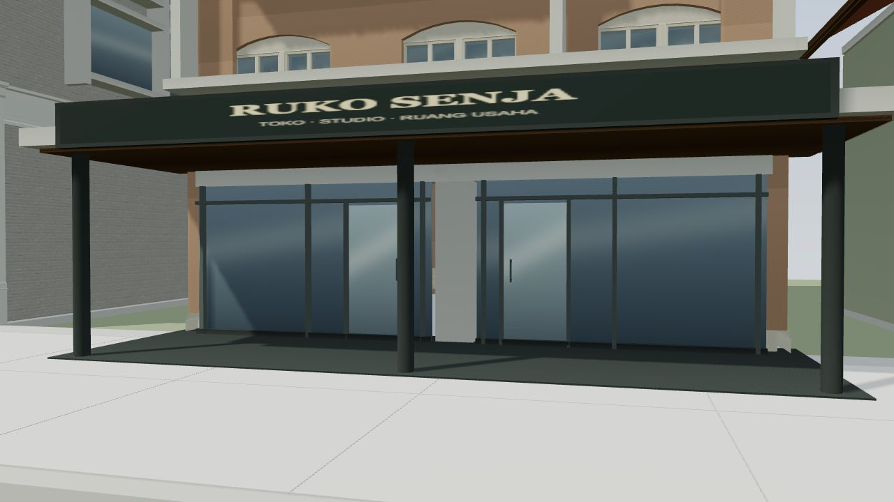
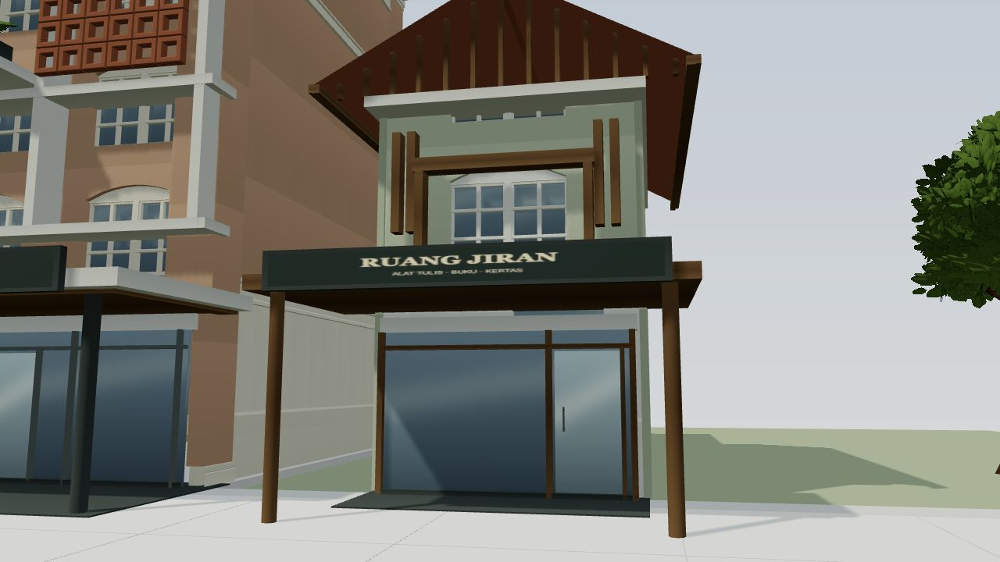
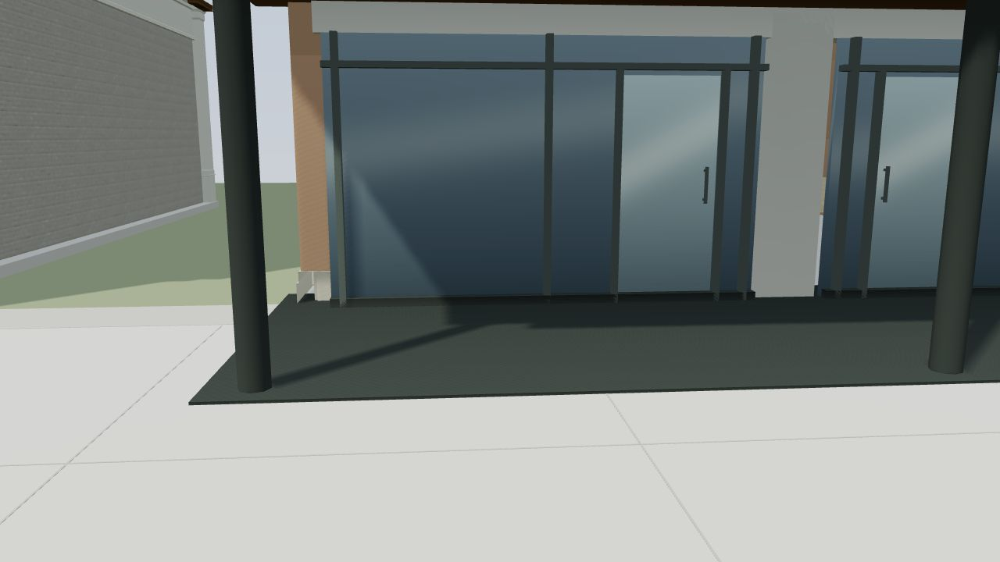
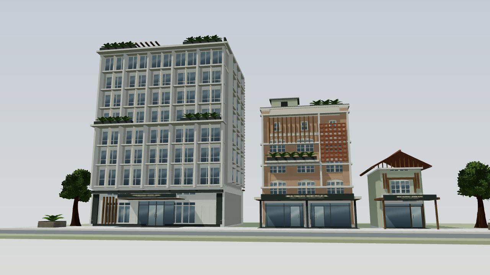
Fixed-camera comparison gallery
Actual browser captures at 1280 × 720. Each original/enhanced pair uses identical lighting, camera position, lens and source scale. Select an image to inspect that view in the live scene.
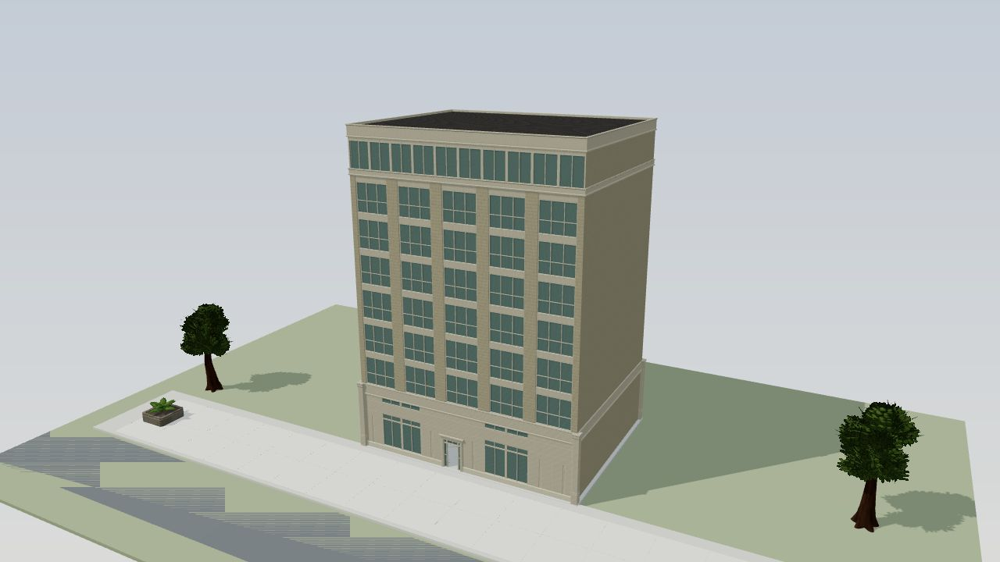
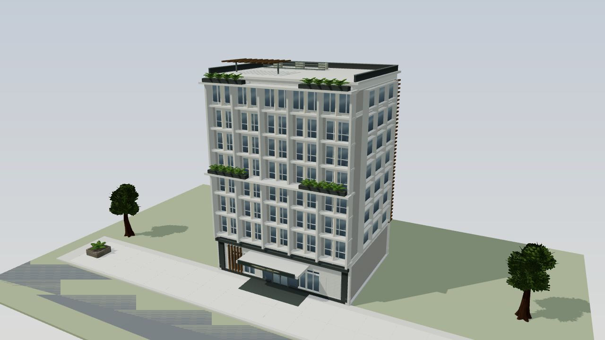
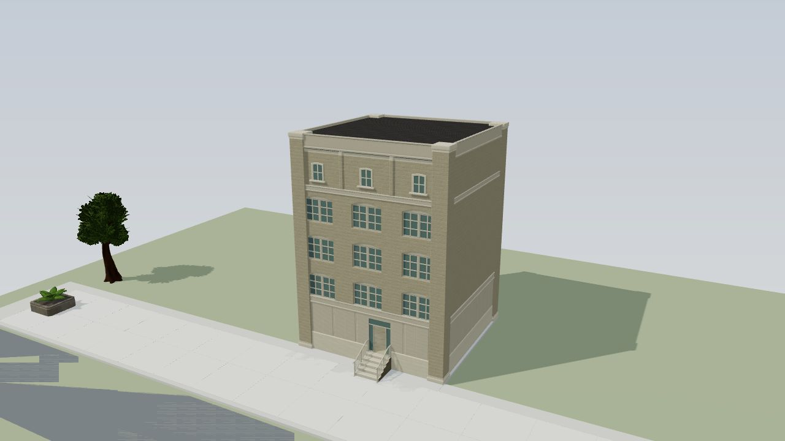
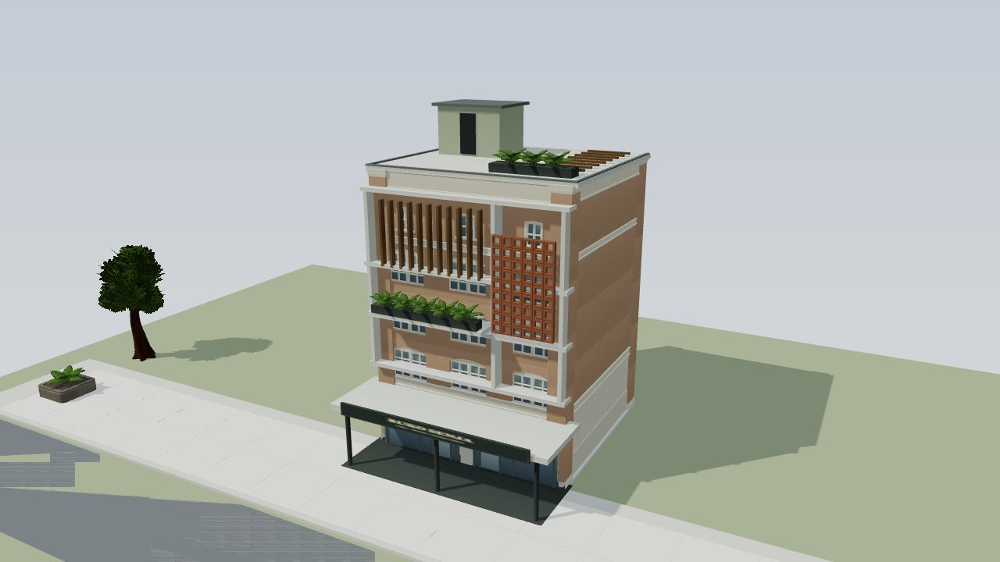
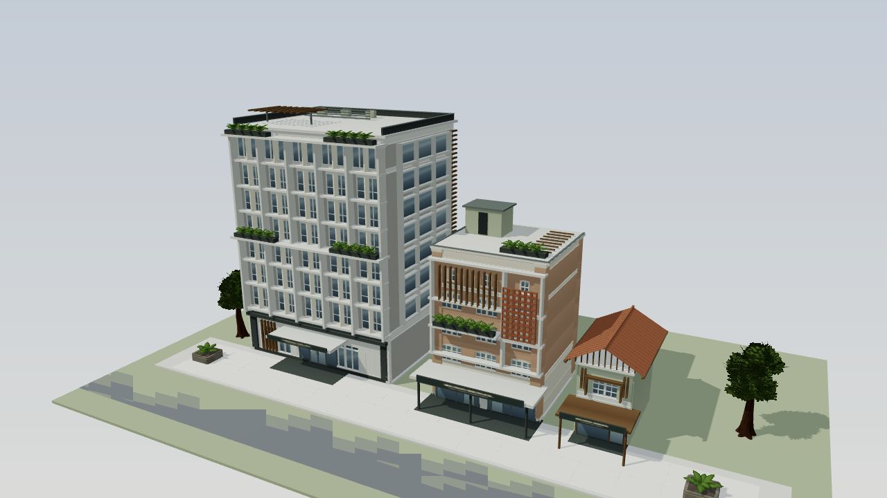
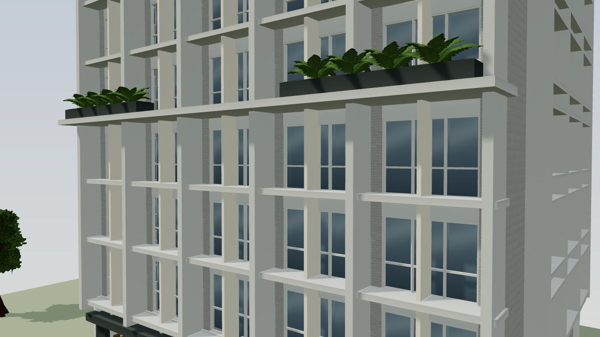
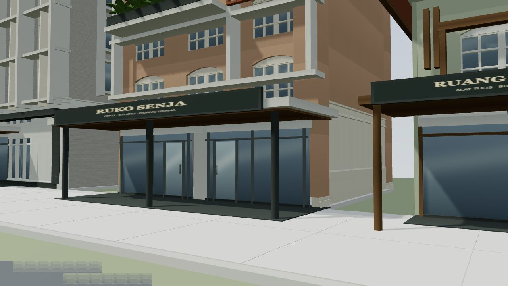
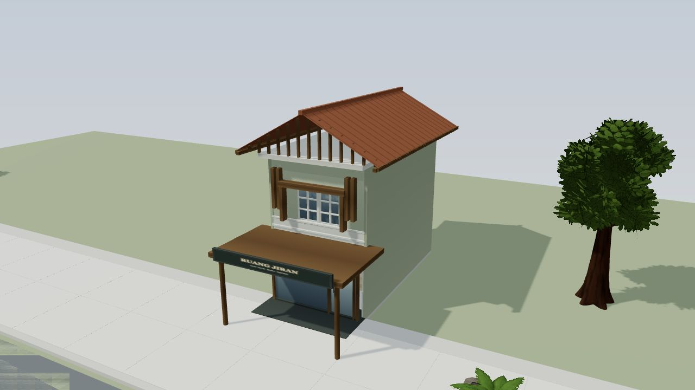